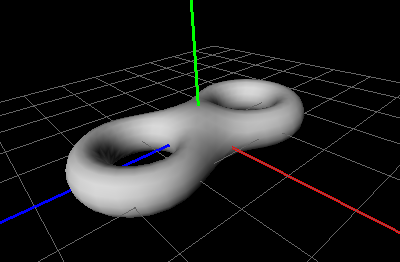

OffView-Help
Content
About OffView
This program is for viewing Object File Format (.off) files in 3D with OpenGL.
Object File Format files are used to represent the geometry of a model
by specifying the polygons of the model's surface. The polygons can have
any number of vertices. OffView is written by four students of software
engineering at Konstanz University of Applied Sciences, Germany:
- Manuel Caputo,
- Markus Häcker,
- Daniel Fritz and
- Benjamin Stauder.
The project is hosted on Google Code and can be found under
https://github.com/cry-inc/offview.
It's free software under the conditions of version 3 of the GNU General Public License
(GPLv3).
Menu Description
Here a explanation of every menu item of the programm:
-
File
-
File open:
Open a file in the .off-format and show the saved 3D-graphics in the drawing window.
-
File close:
Close the opened file and delete the 3D-graphics out of the drawing window.
-
Exit:
Exit the whole programm.
-
View:

-
Choose Background Color:
Choose user-defined background color for the drawing window.
You can either pick from a clutch of given colours or you can
create an optional colour shade at will.
-
Choose Object color:
Choose user-defined 3D-object colour. You can either pick from a
clutch of given colours or you can create an optional colour shade at will.
-
Mode
You can pick from one of the following viewmodes:
- Dot Mode
All vertices of the 3D object will be displayed. In this mode there are no
colours available; not even the original colors of the object.
Quod vide: coloured Mode.

- Flat Shading Mode
All faces of the 3D object are shown flat shaded.
In this mode, the original colours of the object cannot be seen.
Nevertheless, you can attribute a colour to the object.
Quod vide: coloured mode.

- Smooth Shading Mode
All faces of the 3D object are shown smooth shaded.
In this mode, the original colours of the object cannot be seen.
Nevertheless, you can attribute a colour to the object.
Quod vide: coloured mode.

- Coloured Mode
All faces of the 3D object will be displayed. The object will displayed
coloured. If there are no colours noted/saved, you can use
Choose Object Color
to define a colour of your choice for the object.

-
Show Planes
You can optionally display one or more coordinate planes of the coordinate system
of the 3D object. For more Information: Quod vide
Show Coordinate System
-
Show coordinate system
You can optional display the coordinate axis of the coordinate system
of the 3D-object, with the activation or deactivation of this menu item.
The colours of the axis are define the following way:
X-axis: red; Y-axis: green; Z-axis: blue.
-
Reset View
Here, you can reset the view. All repositionings, rotations and
scalings will be removed.
Language
Here you can change the language of the user interface.
Help
-
Help Contents
This file.
-
About OffView
A small dialogue box with informations about OffView.
Additionally, it contains version number, licence and
information about the authors of the programm.
-
About Qt
Information about the Qt toolkit.
Controls
The purpose of this programm is to display 3D graphics. For the correct handling
of the programm, you should take a short look at the controls:
-
Rotate:
Normally, the 3D object will be rotatd around his x- and y-axis
(see here for the determined denotation of the axis).
To do this, hold the left mouse button pressed and drag.
In addition, you have the possibility to rotate the object around a single axis.
Therefore you need additional control keys:
If you hold the x-key in addition to the left mouse button, the object will
rotate only around the X-axis. Analogue, the same apllies to the Y- and Z-axis.
-
Move:
A 3D-object can be moved inside the drawing window. To do that, use the
right mouse button. The controls are analogue to Rotate:
Without pressing a key you move it along its X- and Y-axis,
pressing the X-key, you can move it only along its X-axis and so on...
-
Zoom:
Use the mouse wheel to zoom in and out.
Additional Information for Windows Users
To use the OffView as default program to display 3D objects in the .off-format,
follow this steps:
- Open a folder where at least one file in .off-format is placed.
- Right click on one of the .off-format files and choose the item "Open with..."
(respectively "Open with..."->Choose default programm)
- Choose the programm "OffView" from the list. If it isn't on the list,
click "Browse" and search the programm "OffView". (If not already happened,
check the checkbox "Always use the selected programm to open this kind of file")
- Comfirm with "OK".